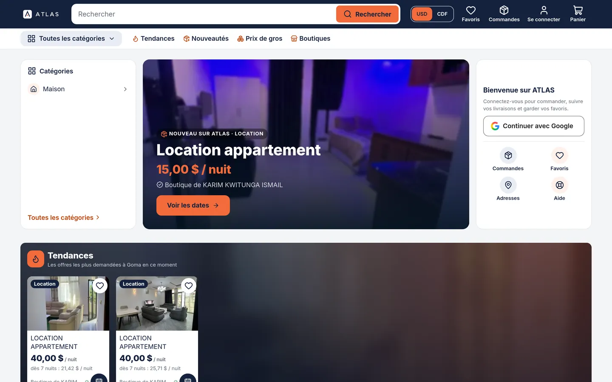
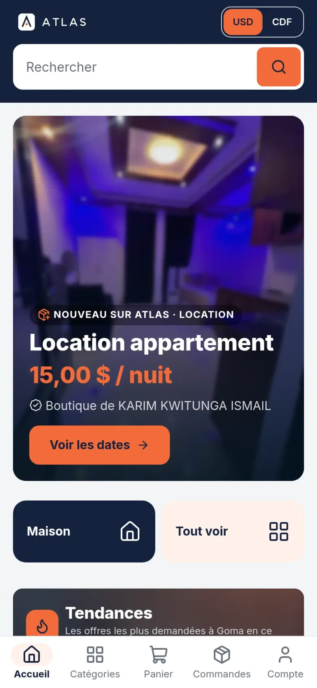

Iro007 · Développeur web et mobile · Goma, RDC
Je construis des places de marché pour Goma.
Deux applications complètes, de la base de données jusqu'à l'appli Android : commandes, paiement mobile money, livraison dans les 18 quartiers de la ville.
Projet 1 · Place de marché
ATLAS
Les boutiques vérifiées de Goma en ligne : articles livrés à moto, locations à réserver, services sur rendez-vous. Le client paie avant la livraison, l'argent reste bloqué jusqu'à ce qu'il donne son code au livreur.


Ce que fait l'appli
- Quatre espaces : client, vendeur, livreur et administration.
- Paiement en séquestre, libéré par un code à 6 chiffres ou un QR code scanné par le livreur.
- Attribution automatique du livreur le plus proche de la boutique, offre valable 60 secondes.
- Réservations sans double location possible, prix long séjour, prix en USD ou en CDF.
- Adresse exacte posée sur la carte (Mapbox, OpenStreetMap), aperçu du trajet pour le livreur.
- Accès renforcé pour vendeurs et admin : Google, mot de passe et application d'authentification.
290+tests de la base
170+tests du site
24migrations SQL
ReactTypeScriptVite
SupabasePostgreSQLPostGIS
MapLibreVercelAndroid (TWA)
Version de test : le paiement est simulé en attendant l'agrégateur mobile money. Code source privé.
Projet 2 · Multi-vendeurs
Kitty
Un seul panier pour plusieurs boutiques de Goma. L'achat est découpé en une commande par boutique, la plateforme prend sa commission, et ses livreurs livrent à domicile.


Ce que fait l'appli
- N'importe qui peut ouvrir sa boutique ; l'admin accepte, refuse ou suspend.
- Espace vendeur : produits avec photos, stock, commandes jusqu'à « prête ».
- Espace livreur : courses à prendre, mes livraisons, livraisons terminées.
- Panel d'administration séparé, sur sa propre adresse.
- Toutes les règles d'accès vérifiées par la base (Row Level Security), pas seulement par l'écran.
77tests de la base
7migrations SQL
4espaces : client, vendeur, livreur, admin
ReactTypeScriptVite
SupabasePostgreSQLVercelAndroid (TWA)
Version de test. Code source privé.